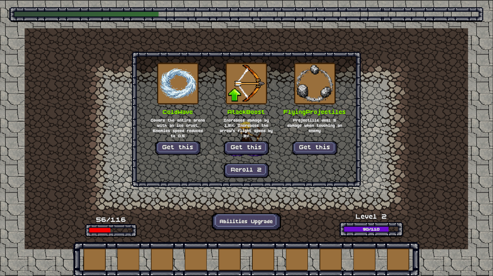
Новые навыки
Во время забега игрок получает варианты новых навыков и постепенно формирует текущий билд.
КОМАНДНЫЙ ПРОЕКТ
2D action roguelite с видом сверху, где игрок переживает волны врагов, развивает набор заклинаний и адаптирует билд под локации, противников и случайные улучшения.
ОБ ИГРЕ
Игрок остаётся в центре боевой арены и отражает всё более сложные волны врагов. Опыт открывает новые навыки и усиления, а сочетание эффектов позволяет собирать разные билды для следующих волн и локаций.
ГЕЙМПЛЕЙ
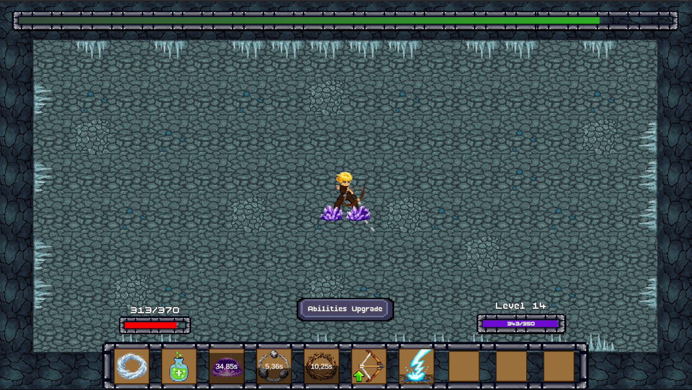
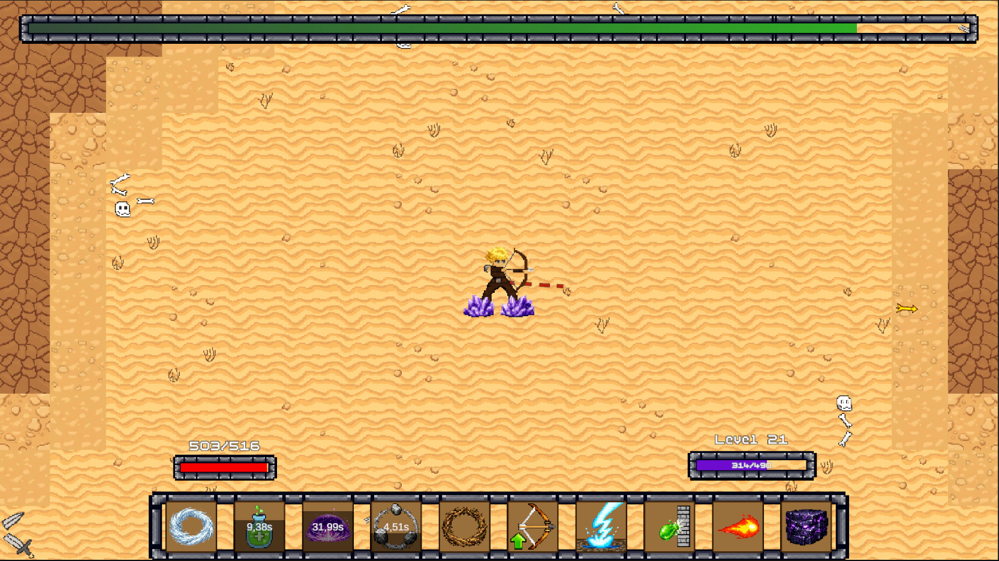
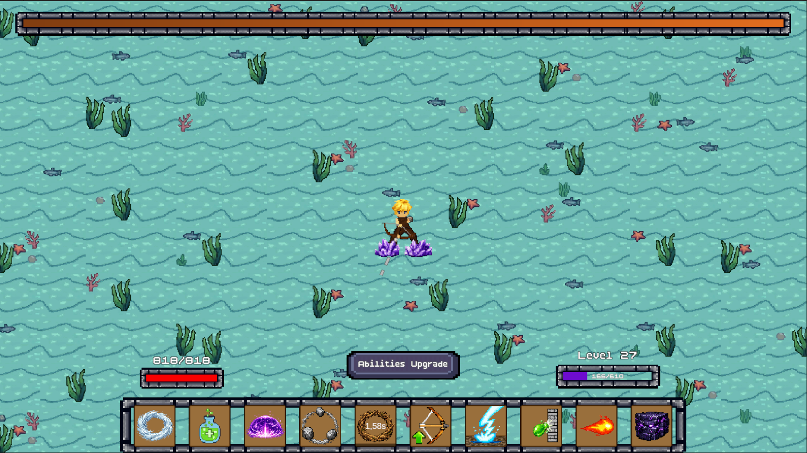
СИСТЕМЫ

Во время забега игрок получает варианты новых навыков и постепенно формирует текущий билд.
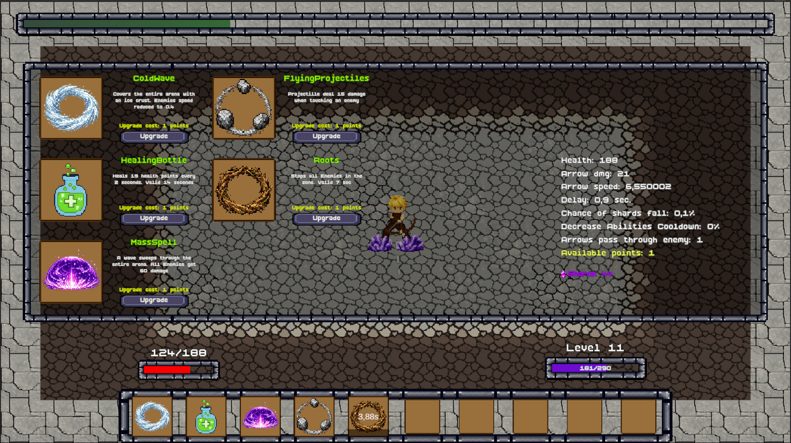
Экран развития связывает улучшение навыков с характеристиками персонажа и делает прогрессию читаемой для игрока.
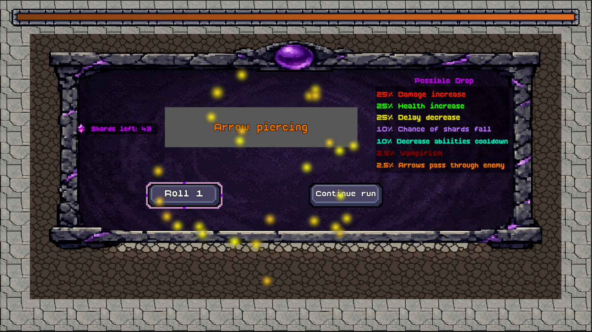
Мета-прогрессия использует отдельный экран получения наград и постоянного развития между забегами.
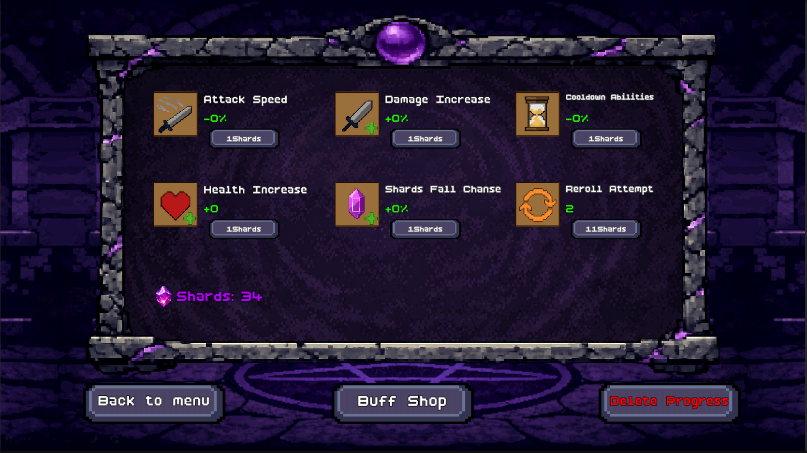
Отдельный магазин позволяет вкладывать прогресс в постоянные усиления и постепенно расширять возможности персонажа.
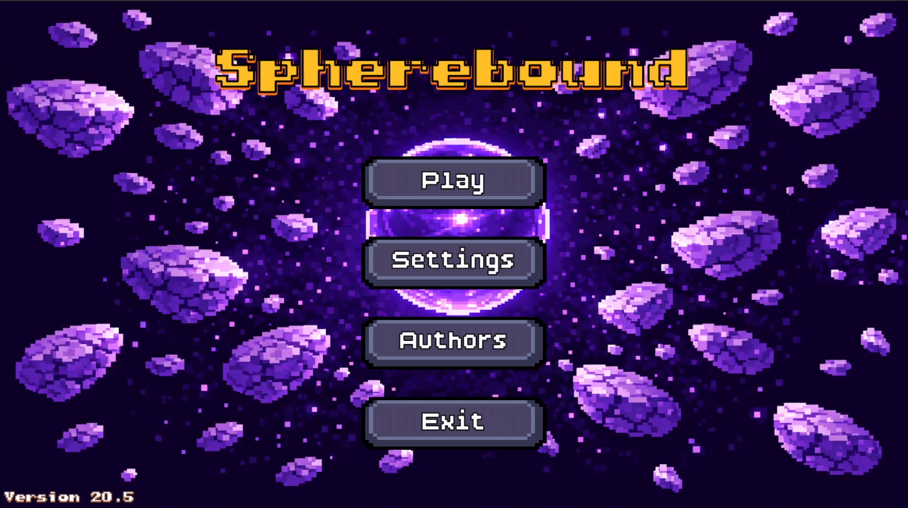
Главное меню даёт доступ к запуску игры, настройкам и другим основным разделам проекта.
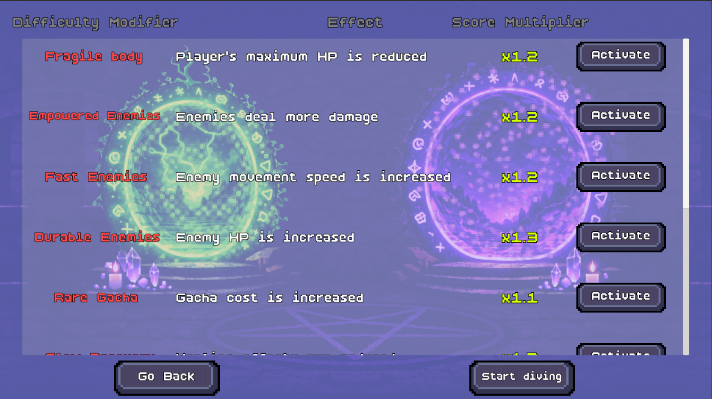
Перед запуском бесконечного режима игрок может активировать дополнительные усложнения, повышающие множитель получаемых очков.
МОЙ ВКЛАД
Интеграция спрайтов, animation clips, UI, spell prefabs и VFX. Настройка объектов и подготовка контента к использованию в игровых сценах.
Работа с игровыми сценами, tilemaps, UI layouts и переходами между сценами. Сборка и настройка интеграционных частей игровых локаций.
Собрал команду, распределял задачи, отслеживал выполнение, организовывал Miro и созвоны, координировал передачу ассетов и участвовал в обсуждении бюджета гранта и необходимого ПО.
NORDIC GAME 2026
Играбельный билд Spherebound был представлен на Nordic Game 2026. Посетители могли самостоятельно попробовать игру на выставочном стенде.
Открыть Spherebound в Steam →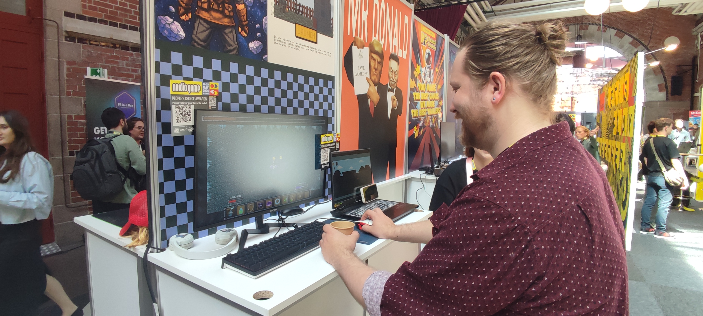
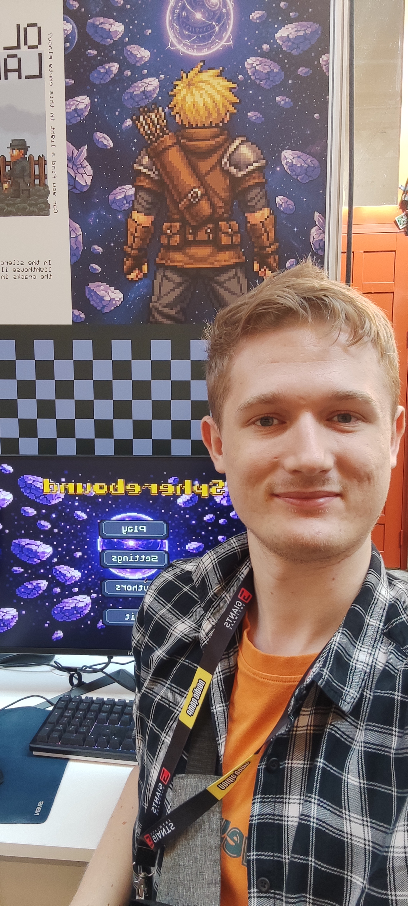
ССЫЛКИ